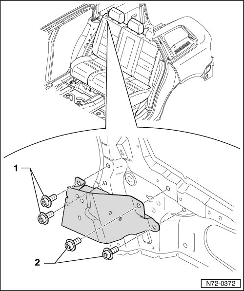

Backrest Mounting Bracket
Rear Seats
Backrest Mounting Bracket
• Removal and installation is described for the right-hand side of the vehicle. Removal and installation for the left-hand side is performed in the same manner.
Removing
- Remove C-pillar trim --> [ C-Pillar Trim ] C-Pillar Trim.
- Remove roof end strip --> [ Roof End Strip ] Roof End Strip
- Remove D-pillar trim --> [ D-Pillar Trim ] D-Pillar Trim.
- Remove rear lock carrier cover --> [ Rear Lock Carrier Cover ] Rear Lock Carrier Cover
- Remove luggage compartment floor --> [ Luggage Compartment Floor ] Luggage Compartment Floor.
- Remove backrest:
• Left --> [ Left Seat Backrest ] Left Seat Backrest
• Right --> [ Right Seat Backrest ] Right Seat Backrest
- Remove side wall trim --> [ Luggage Compartment Side Trim ] Luggage Compartment Side Trim.
- Remove the two bolts - 1 - (20 Nm).
- Remove the two bolts - 2 - (20 Nm).
• The bolts are microencapsulated and must therefore be replaced after every removal.
• Before installing the new bolts, the threads of the corresponding nuts must be cleaned.

Installing
- Perform the steps used for removal in reverse order.